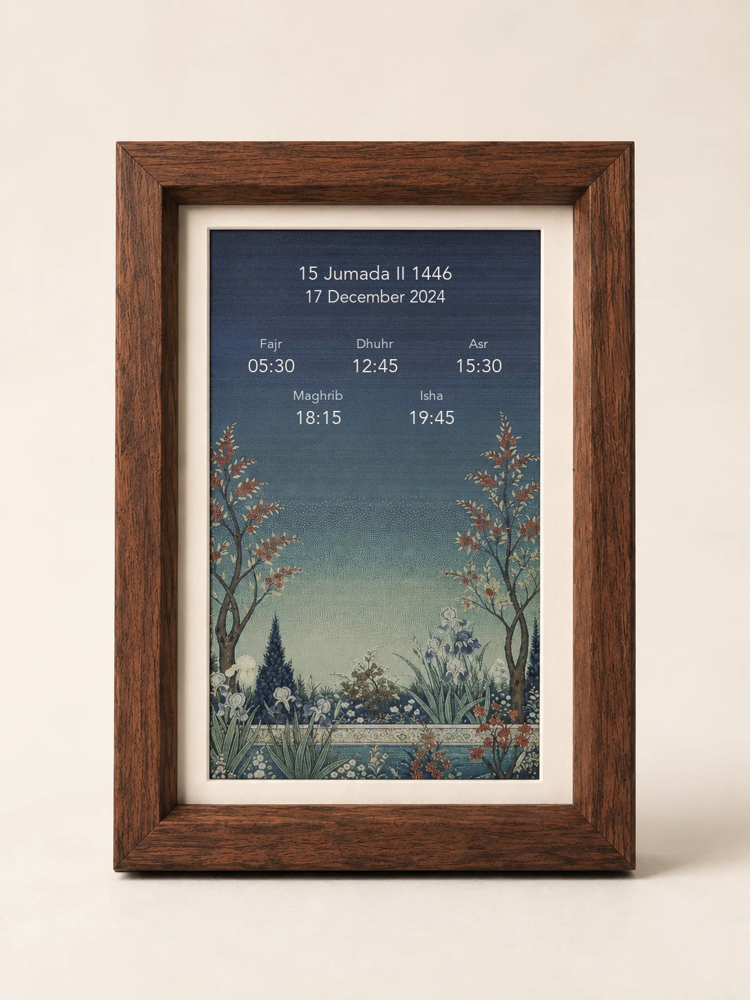
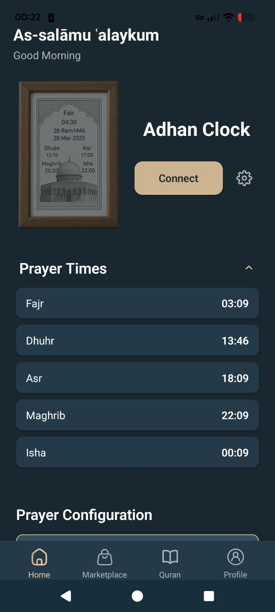
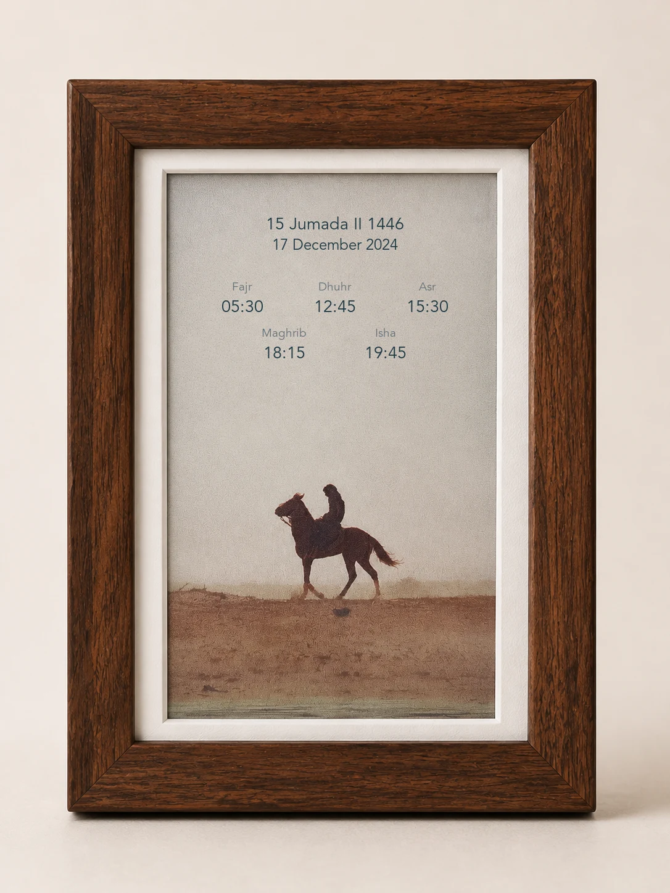
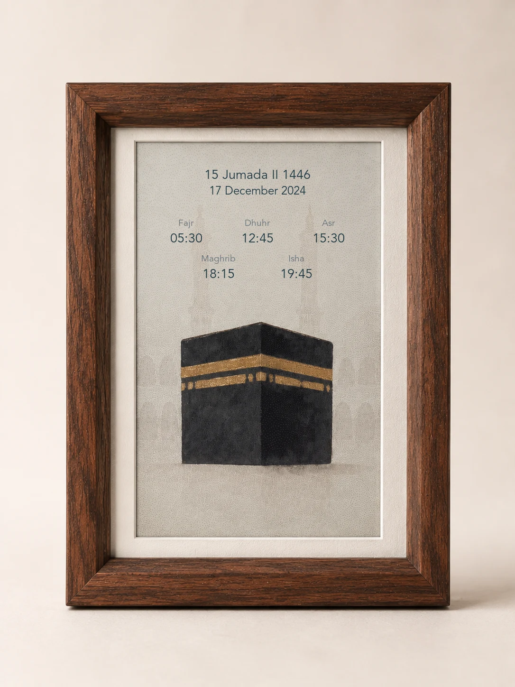

Papierachtig e-inkBrengt kunst tot leven in je woonkamer
ADHAN PAPER
Gebedstijden.
Gebedstijden.
Om bij stil
te staan.
Adhan Paper is een moderne adhan klok met een papierachtig kleuren-e-inkscherm zonder schermgloed, ontworpen om gebedstijden, islamitische kunst en betekenis in huis te brengen.

Geen schermgloedNatuurlijk in de kamer
Synchronisatie via appEenvoudig in te stellen
Islamitische kunstZorgvuldig gekozen ontwerpen

APP-SYNCHRONISATIE
Eenvoudig ontworpen.
Eenvoudig ontworpen.
Verbonden met geloof.
Stel de gebedstijden in op basis van je locatie en voorkeuren, of stem ze af op je lokale moskee. Kies kunst en een adhan en houd alles vanuit één app gesynchroniseerd.
Islamitische kunstOntdek betekenisvolle kunstwerken en synchroniseer je favorieten met de lijst.
Adhan-reciteurKies uit geselecteerde reciteurs of voeg je eigen audio toe.
Koran-audioKies een reciteur en luister vanuit de app.
ADHAN-RECITEUR
Een vertrouwde stem bij ieder gebed.
Kies de adhan-reciteur die bij jouw huis past. Kies uit een zorgvuldig geselecteerde collectie, stel de favoriete reciteur van jezelf of een dierbare in, of upload je eigen opname.
KUNSTCOLLECTIE
Islamitische kunst voor jouw ruimte.
Kies een kunstwerk in de app en breng het tot leven op dezelfde Adhan Paper-lijst.
Garden Reverie

Desert Traveller

The Sacred House
MET ZORG GEMAAKT
Gemaakt om te zien.
Gemaakt om te zien.
Ontworpen om thuis te horen.
De warme lijst, witte binnenrand en het matte e-inkoppervlak laten Adhan Paper meer aanvoelen als ingelijste kunst dan als een gewoon digitaal scherm.
Kleuren-e-inkscherm
Vrijstaand ontwerp
Draadloze app-synchronisatie
ADHAN PAPER
Een adhan klok ontworpen voor rust.
Adhan Paper brengt het gebed op een rustige manier in beeld zonder je huis digitaler te laten voelen. Het kunstgerichte ontwerp voelt als een natuurlijk onderdeel van je interieur.
Read about the Adhan clock in EnglishWat is een adhan klok?
Een adhan klok is een scherm voor thuis waarop je de vijf dagelijkse islamitische gebedstijden in één oogopslag ziet.
Hoe worden de gebedstijden ingesteld?
Kies in de Adhan Paper-app je locatie en berekeningsinstellingen of stem de tijden af op je lokale moskee. Daarna synchroniseer je ze draadloos met de lijst.
Welke gebeden en datums zie je?
Adhan Paper toont Fajr, Dhuhr, Asr, Maghrib en Isha, samen met de islamitische en Gregoriaanse datum en het gekozen islamitische kunstwerk.
Waarom een kleuren-e-inkscherm?
E-ink heeft een matte, papierachtige uitstraling zonder schermgloed. Daardoor past de adhan klok in de kamer als een ingelijst kunstwerk.